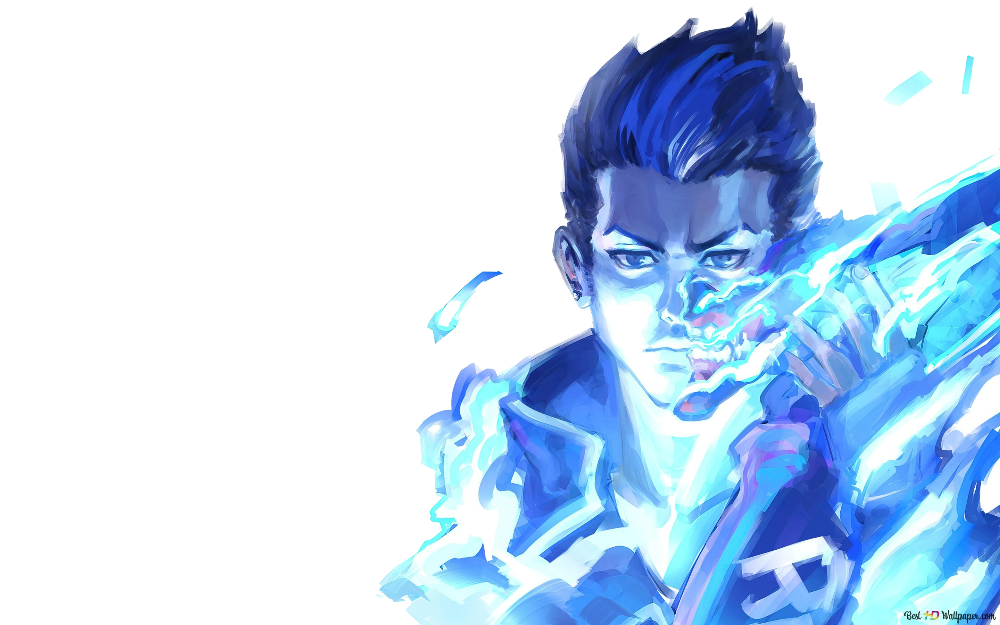
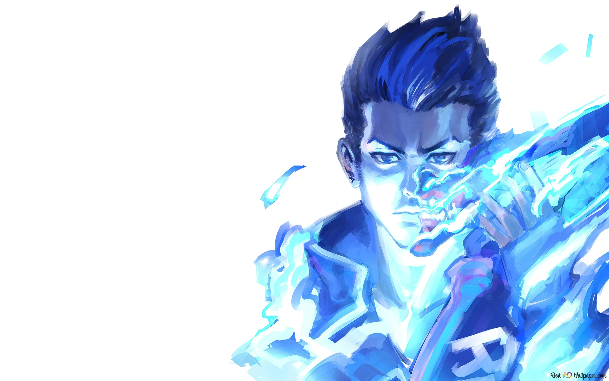

-"I don't care if there are five of them or fifty of them. Let's go!"
Description of his ability:
"Japanese native Yoru rips holes straight through reality to infiltrate enemy lines unseen.
Using deception and aggression in equal measure, he gets the drop on each target
before they know where to look."
Abilities:
Fakeout ('C' ability)
- EQUIP an echo that transforms into a mirror image of Yoru when activated. FIRE to instantly activate the mirror image and send it forward. ALT FIRE to place an inactive echo. USE to transform an inactive echo into a mirror image and send it forward. Mirror images explode in a blinding flash when destroyed by enemies
Blindside ('Q' ability)
- EQUIP to rip an unstable dimensional fragment from reality. FIRE to throw the fragment, activating a flash that winds up once it collides with a hard surface in world.
Gatecrash ('E' ability)
- EQUIP a rift tether FIRE to send the tether forward ALT FIRE to place a stationary tether ACTIVATE to teleport to the tether's location USE to trigger a fake teleport.
Dimensional drift ('X' ability)
- EQUIP a mask that can see between dimensions. FIRE to drift into Yoru's dimension, unable to be affected or seen by enemies from the outside.
 
